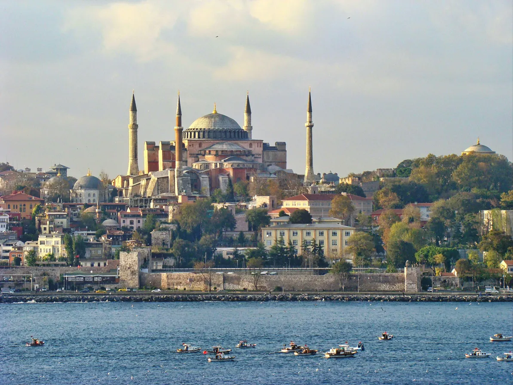
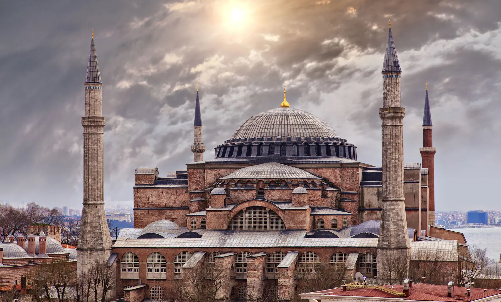

Hagia Sophia



History
Located in Istanbul, Turkey, the Hagia Sophia ("Holy Wisdom") has served over 1,600 years as a Byzantine cathedral, an Ottoman mosque, a museum, and once again a grand mosque. Its current structure was completed in 537 AD under Byzantine Emperor Justinian I, pioneering massive pendentive dome architecture that reshaped construction history.